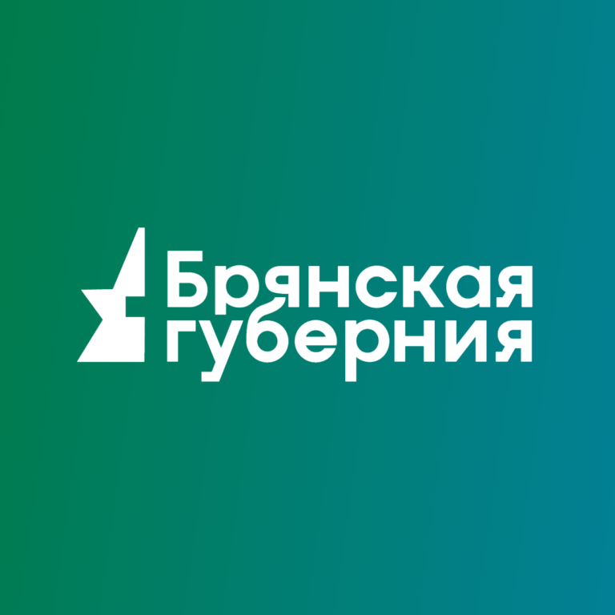
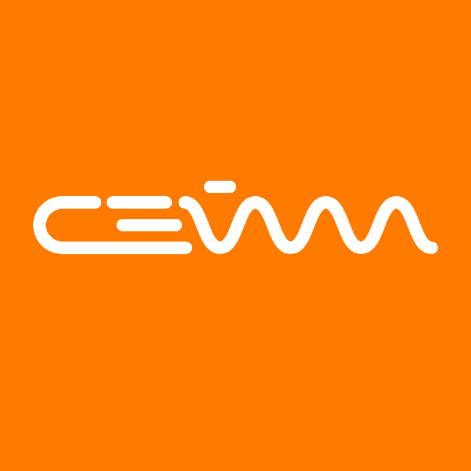
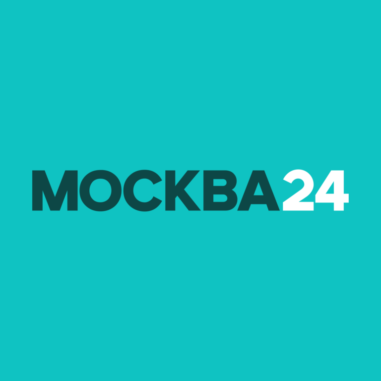
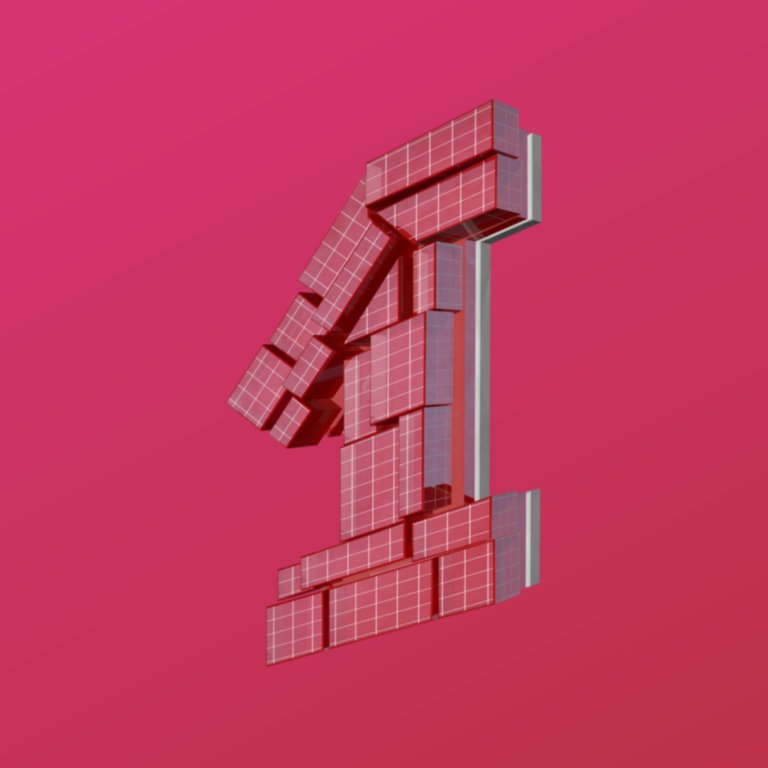

21-я кнопка, ЦФО
Брянская Губерния

Мир Белогорья (Белгород)
Губерния 33 (Владимир)
TV Губерния (Воронеж)
Барс (Иваново)
Ника ТВ (Калуга)
Русь (Кострома)

Сейм (Курск)
Липецкое время

Москва 24
360° (Подмосковье)
Первый Областной (Орёл)
ТКР (Рязань)
Регион 67 (Смоленск)
Новый Век (Тамбов)
Тверской Проспект - Регион
Первый Тульский

Первый Ярославский